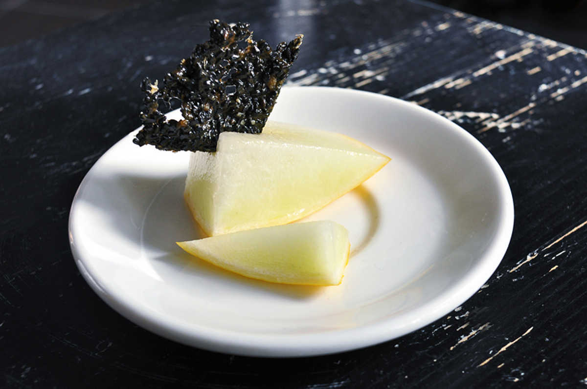

black sesame brittle
10 pieces — 20 minutes
Sesame brittle looks impressive when served over desserts, like pieces of black coral. If you like the nutty taste of sesame seeds with a bit of sweet, you will love this recipe.
It's simple to make, but requires all of your attention. The sugar syrup becomes solid when cool, which means every step needs to be done quickly. These are no-bake, and are ready to eat almost instantly.
These should be served over desserts that aren't too sweet, the sweet of the sesame brittle can be a bit much. I suggest serving it with fruit, or kanten (agar agar based desserts).
 brown sugar 45 g
brown sugar 45 g vanilla extract 1.25 ml
vanilla extract 1.25 ml black sesame seeds 30 g
black sesame seeds 30 g
brittle
- Prepare baking sheet lined with a baking mat, keep a flat spatula close by.
- Put the 45 g (1/4 cup) of brown sugar and 1.25 ml (1/4 tsp) of vanilla extract in a pot at medium heat.
- Stir constantly, until the sugar is completely dissolved.
- Add 30 g (1/4 cup) of black sesame seeds. Mix thoroughly.
- This part is tricky, the mixture solidifies very quickly. You need to do this fast! Take the pot, and pour its contents out onto the baking sheet. With the spatula spread and flatten it out as much as you can.
- Cut the brittle while it's still warm, serve with fresh fruit!